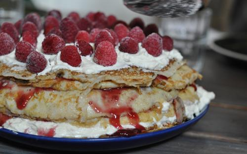
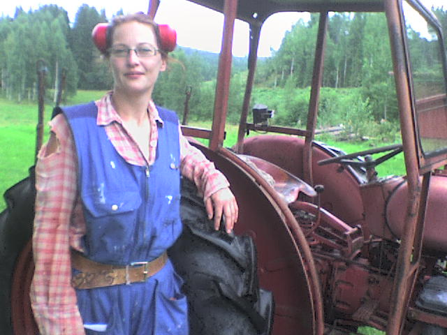
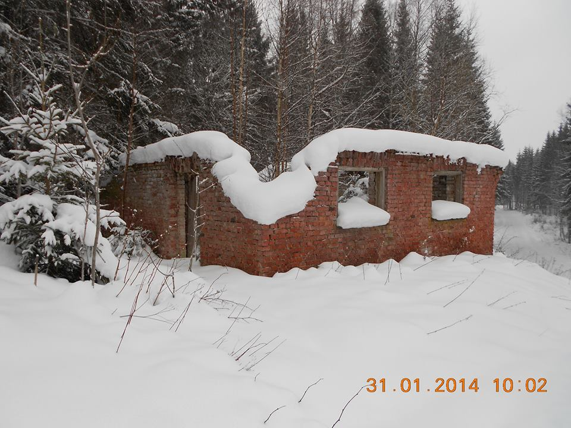

Stöllvetesbidragö
Den nittonde varje månad kom bidraget från Försäkringskassan till alla dem som av någon anledning inte riktigt passade in. Vi kallade bidraget för Stöllvetesbidragö (stållvettsbidraget) och dagen då bidraget kom i brevlådan blev ofta en ovanligt uppsluppen och trevlig dag i Börtan.
Tresnåret
Inte sällan hörde jag vid tresnåret en Sundap, en traktor, eller ett sprucket Volvo-avgasrör komma allt närmre, vilket nästan alltid innebar att någon av mina grannar ville ha kaffe. Mina besökare gick inte gärna fram till dörren och knackade på utan satte sig hellre vid uthuset på en vedkubbe och väntade på att jag skulle komma ut med kaffe.
Tradition
 Att fira stöllvetesbidragö med kaffe på Kanal, det var så min stuga hette, blev med tiden något av en tradition. Jag tillverkade en bänk där de kunde sitta och luta sig mot uthuset i väntan. Ibland drog en av stöllvetesbidragstagaane elegant fram en flaska ur sin innerficka och bjöd på kask, andra gånger bjöd de varandra på snus medan de väntan.
Pannkakstårta vid ruinen
 Men vid ett par tillfällen, då jag av någon anledning kände mig ovanligt glad och väl till mods, bjöd jag stöllvetesbidragstagaane på Pannkakstårta. Jag dukade då upp vid ruinen efter en ladugård av fint tegel, bordet hade jag i all hast snickrat ihop själv av knotiga björkgrenar till ben och några plankor som skiva. Stöllvetesbidragaane blev mäkta imponerade, de spred budskapet till övriga hushåll i Börtan och efter det blev jag känd i bygden för att äga en nästan övernaturlig förmåga att göra Pannkakstårta. Bara en gumma på skogen som hette Hilda i Hottastörpö kunde göra bättre pannkakor än så, hade stöllvetesbidragstagaane sagt om mig och jag tog hela saken som en stor komplimang.
☆☆☆☆☆